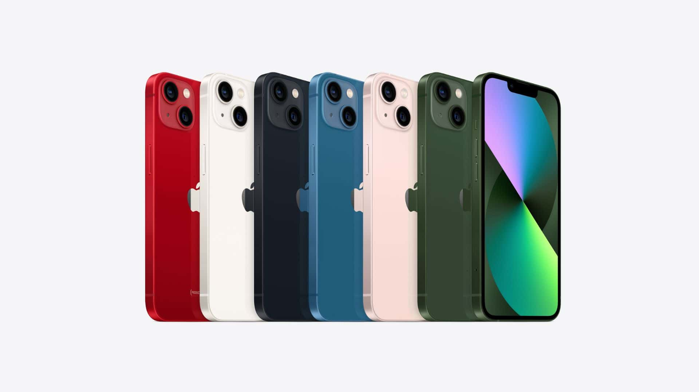

O Apple iPhone 13 é um dos smartphones iOS mais avançados e completos que existem em circulação
Apple iPhone 13
Tem um grande display de 6.1 polegadas com uma resolução de 2532x1170 pixel. As funcionalidades oferecidas pelo Apple iPhone 13 são muitas e inovadoras. Começando pelo 5G que permite a transferência de dados e excelente navegação na internet. Enfatizamos a excelente memória interna de 512 GB mas sem a possibilidade de expansão.
Câmera discreta de 12 megapixel mas que permite ao Apple iPhone 13 tirar fotos de boa qualidade com uma resolução de 4000x3000 pixel e gravar vídeos em 4K a espantosa resolução de 3840x2160 pixels. A espessura de 7.7mm torna o Apple iPhone 13 um dos telefones mais completos e finos.
ficha tecnica

Então é isso! Espero que você tenha gostado do nosso artigo com essa curiosidade sobre o sistema Android e seu simpático mascote.